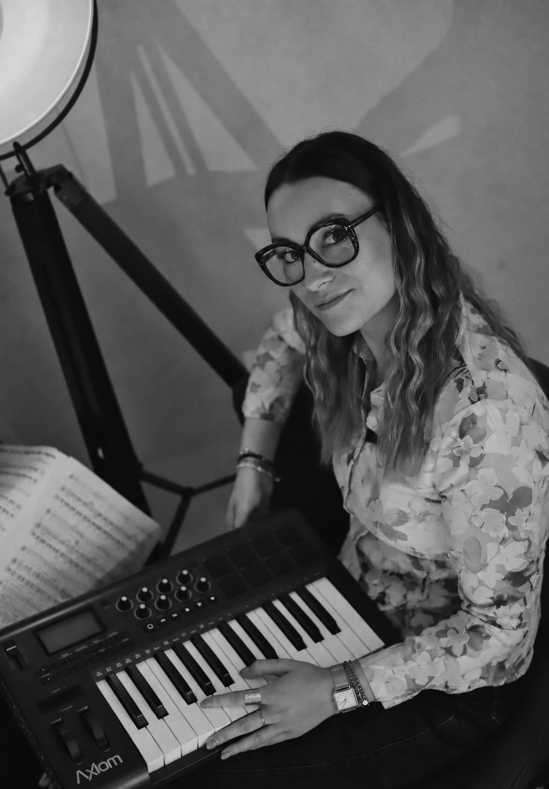
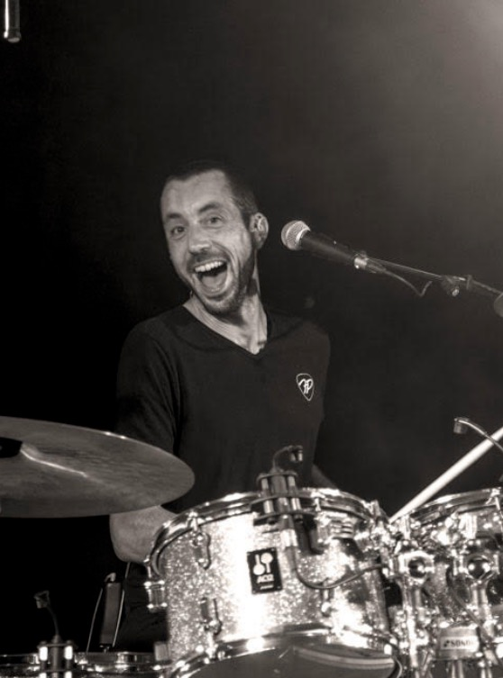

Marie
Douce, curieuse et pleine de cœur, Marie se retrouve entraînée dans l'étrange univers de Memoria. Face aux souvenirs qui s'effacent, elle part à l'aventure pour aider Mélisande — et découvre au passage son amour pour la musique.
Le spectacle
Un spectacle de théâtre et de musique live, pensé pour être vu en famille dès 3 ans jusqu'à 11 ans — et programmé en salle comme en festival.
L'histoire
Tout commence lorsque Marie et Jules découvrent une mystérieuse boîte à musique ayant appartenu à Mélisande, la grand-mère de Marie.
Mais cette boîte cache un incroyable secret : elle ouvre les portes de Memoria, un monde merveilleux entièrement construit à partir des souvenirs de Mélisande.
À leur arrivée, une drôle de surprise attend Jules : à Memoria, il fait la rencontre de Pompon, un lapin aussi attachant qu'imprévisible, qui ne va plus le quitter d'une semelle !
Marie, Jules et Pompon découvrent alors un étrange village, composé de maisons toutes différentes. Chacune d'elles renferme un souvenir de Mélisande : un petit morceau de son histoire, de ses rencontres, de ses joies et de sa vie.
Mais Memoria est en danger. Certaines maisons se fissurent, d'autres s'effondrent… et avec elles, ce sont les souvenirs de Mélisande qui disparaissent peu à peu.
Marie, Jules et Pompon vont alors parcourir le village et tenter de raviver ces précieux souvenirs. Au fil de leurs aventures, ils découvriront que la musique, les émotions et les moments partagés peuvent faire renaître ce que le temps semblait vouloir effacer.
Une aventure musicale et poétique qui parle avec douceur de l'amour sous toutes ses formes : celui d'une famille, d'un grand amour, d'une amitié, mais aussi de tous ces petits liens qui traversent une vie et continuent d'exister au-delà des souvenirs.
Les personnages
Mémoria est destiné aux enfants à partir de 3 ans jusqu'à 11 ans — et, grâce à ses différentes lectures, tout autant aux adultes qui les accompagnent.
Douce, curieuse et pleine de cœur, Marie se retrouve entraînée dans l'étrange univers de Memoria. Face aux souvenirs qui s'effacent, elle part à l'aventure pour aider Mélisande — et découvre au passage son amour pour la musique.

À seulement 7 ans, Jules est un petit garçon attachant, espiègle et plein d'imagination — le fidèle compagnon de jeu de Marie.

Avec sa casquette et son petit air coquin, Pompon est un lapin aussi drôle qu'imprévisible que Marie et Jules rencontrent à Memoria. Derrière ses bêtises se cache un compagnon précieux.

« Mémé-lisande » est au cœur de Memoria. Cette grand-mère touchante a passé sa vie sur scène à interpréter les plus belles pièces pour piano ; peu à peu, ses souvenirs — et les maisons du village — se fissurent.

Petites créatures hautes en couleur, les Ridédous habitent Memoria. Chacun a son caractère, son univers et son instrument préféré : drôles, sensibles et parfois maladroits, ils veillent à leur manière sur les souvenirs de Mélisande.
L'équipe artistique
Jean et Zoé ont intégralement écrit et pensé ce spectacle. Sur scène, ils deviennent tour à tour personnages, narrateurs et musiciens : piano, clavier, saxophone, basse, ukulélé et percussions se mêlent au jeu théâtral pour raconter l'histoire en direct. Ici, la musique ne se contente pas d'accompagner Memoria — elle fait partie de l'histoire et devient l'une des clés pour retrouver les souvenirs perdus.

Autrice, comédienne & musicienne — donne vie à l'histoire au clavier et au saxophone.

Auteur, comédien & musicien — donne le rythme à la basse et à la batterie électronique.
Informations pratiques